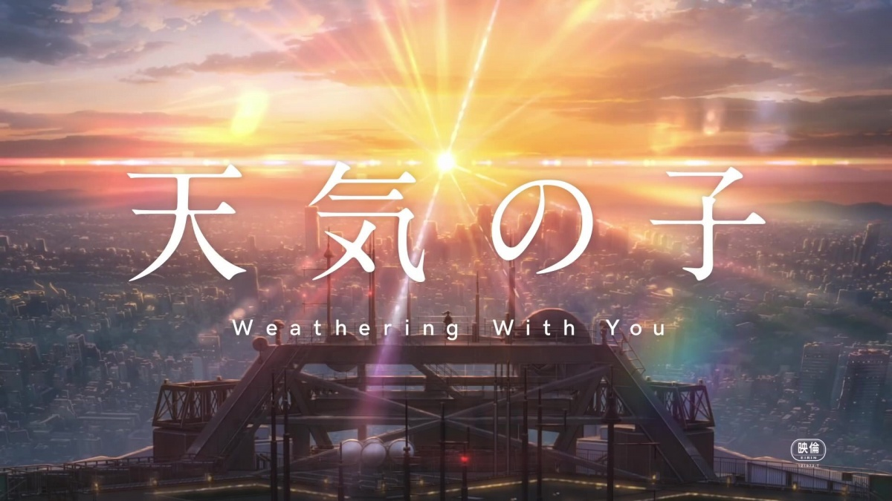

天野凪
评价:虽然凪还是小学生，但言行举止却很成熟，很受女孩子欢迎。被缺乏恋爱经验的帆高称呼为前辈。另一方面，他又非常担心姐姐阳菜与帆高两人的恋情，有着符合年龄的孩子气。对姐姐与帆高两人的互动爱情交往永远支持看好的。
佐仓绫音为前女友，现女友为花泽香菜。原作中有说明佐仓绫音与花泽香菜在解救凪时互换姓氏（在登记薄上两人将姓名填为“佐仓香菜”与“花泽绫音”），所填地址也为假地址，这一点在电影中未有提及。帆高再次来到东京时，他被允许和姐姐继续两人一起生活。
重要的人 想见的人 无论晴雨 不管多远 都一定要去见你！

天气什么的 就让它这么混乱下去吧 人在一个地方走了很久 终于找到了你 不管未来怎样 无论过去如何 现在我选择你 就是我的选择 在这个饱含暴风骤雨的世界里 你我一起 有你足够.